File: 000330.gt.txt (if the image is defective, simply delete all Arabic text and the line will be excluded)
وستمائة وخمسون رجلا .
File: 000331.gt.txt (if the image is defective, simply delete all Arabic text and the line will be excluded)

ورأس بني افرائيم اليشمع بن عميهوذ، وعدد من معه أربعون ألفا وخمسمائة
File: 000332.gt.txt (if the image is defective, simply delete all Arabic text and the line will be excluded)
رجل .
File: 000333.gt.txt (if the image is defective, simply delete all Arabic text and the line will be excluded)
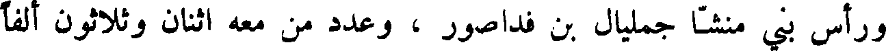
ورأس بني منشا جعليال بن فداصور ، وعدد من معه اثنان وثلاثون ألفا
File: 000334.gt.txt (if the image is defective, simply delete all Arabic text and the line will be excluded)
ومائتا رجل .
File: 000335.gt.txt (if the image is defective, simply delete all Arabic text and the line will be excluded)
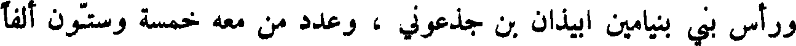
ورأس بني بنيامين ابيذان بن جذعوني ، وعدد من معه خمسة وستون ألفا
File: 000336.gt.txt (if the image is defective, simply delete all Arabic text and the line will be excluded)
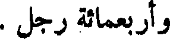
وأربعمائة رجل .
File: 000337.gt.txt (if the image is defective, simply delete all Arabic text and the line will be excluded)
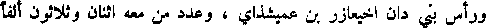
وراس بني دان اخيعازر بن عميشذاي ، وعدد من معه اثنان وثلاثون ألفا
File: 000338.gt.txt (if the image is defective, simply delete all Arabic text and the line will be excluded)
وسبعمائة رجل .
File: 000339.gt.txt (if the image is defective, simply delete all Arabic text and the line will be excluded)
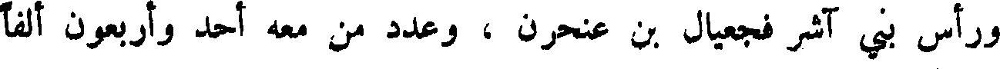
ورأس بني آشر فجعيال بن عنحرن ، وعدد من معه أحد وأربعون ألفا
File: 000340.gt.txt (if the image is defective, simply delete all Arabic text and the line will be excluded)
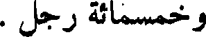
وخمسمائة رجل .
File: 000341.gt.txt (if the image is defective, simply delete all Arabic text and the line will be excluded)
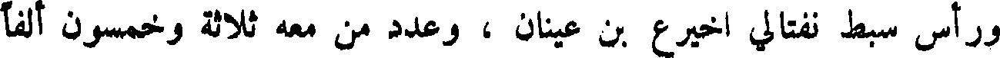
وراس سبط نفتالي اخيرع بن عينان ، وعدد من معه ثلاثة وخمسون ألفا
File: 000342.gt.txt (if the image is defective, simply delete all Arabic text and the line will be excluded)
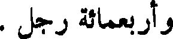
وأربعمائة رجل .
File: 000343.gt.txt (if the image is defective, simply delete all Arabic text and the line will be excluded)
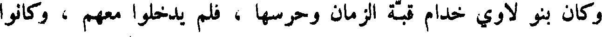
وكان بنو لاوي خدام قبة الزمان وحرسها ، فلم يدخلوا معهم ، وكانوا
File: 000344.gt.txt (if the image is defective, simply delete all Arabic text and the line will be excluded)
مخصوصين بالكرامة والقدس ، وخدمة قبة الزمان والتطهير ، فهذا عدد بني
File: 000345.gt.txt (if the image is defective, simply delete all Arabic text and the line will be excluded)
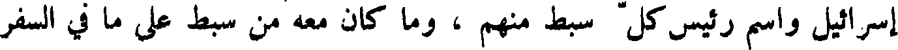
إسرائيل واسم رئيس كل سبط منهم ، وما كان معه من سبط على ما في السفر
File: 000346.gt.txt (if the image is defective, simply delete all Arabic text and the line will be excluded)
الرابع من التوراة .
File: 000347.gt.txt (if the image is defective, simply delete all Arabic text and the line will be excluded)

وأمر الله ، سبحانه ، موسى أن يقول لرؤساء أسباط بني إسرائيل أن
File: 000348.gt.txt (if the image is defective, simply delete all Arabic text and the line will be excluded)
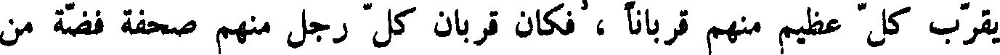
يقرب كل عظيم منهم قربانا ، فكان قربان كل رجل منهم صحفة فجنة من
File: 000349.gt.txt (if the image is defective, simply delete all Arabic text and the line will be excluded)
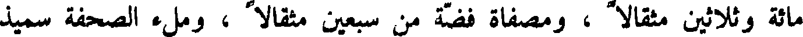
مائة وثلاثين مثقالا ، ومصفاة فضة من سبعين مثقالا ، وملء الصحفة سميذ
File: 000350.gt.txt (if the image is defective, simply delete all Arabic text and the line will be excluded)
ملتوت بدهن، ومدهن ذهب من عشرة مثاقيل مملوءا طيبا، وثورا وكبشا، وحملا
File: 000351.gt.txt (if the image is defective, simply delete all Arabic text and the line will be excluded)
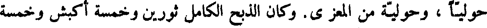
حوليا ، وحولية من المعزى. وكان الذبح الكامل ثورين وخمسة
File: 000352.gt.txt (if the image is defective, simply delete all Arabic text and the line will be excluded)
اكبش وخمسة جداء وخمسة حملان حولية .
File: 000353.gt.txt (if the image is defective, simply delete all Arabic text and the line will be excluded)
إبراهيم
File: 000354.gt.txt (if the image is defective, simply delete all Arabic text and the line will be excluded)
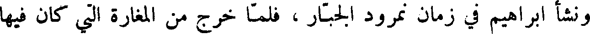
ونشأ إبراهيم في زمان نمرود الجبار ، فلما خرج من المغارة التي كان فيها
File: 000355.gt.txt (if the image is defective, simply delete all Arabic text and the line will be excluded)
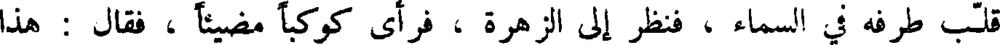
قلب طرفه في السماء ، فنظر إلى الزهرة فرأى كوكبا مضيئا فقال هذا
File: 000356.gt.txt (if the image is defective, simply delete all Arabic text and the line will be excluded)
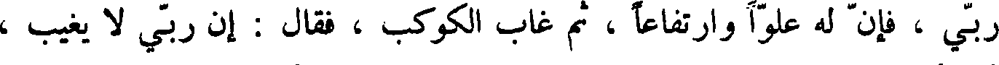
ربي فإن له علوا وارتفاعا ثم غاب الكوكب فقال إن ربي لا يغيب ،
File: 000357.gt.txt (if the image is defective, simply delete all Arabic text and the line will be excluded)
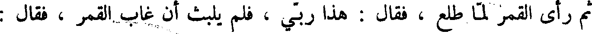
ثم رأى القمر لما طلع ، فقال هذا ربي فلم يلبث أن غاب القمر فقال :
File: 000358.gt.txt (if the image is defective, simply delete all Arabic text and the line will be excluded)
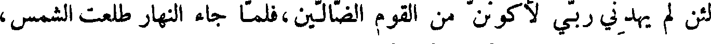
لئن لم يهدني ربي لأكونن من القوم الضالين،فلما جاء النهار طلعت الشمس،
File: 000359.gt.txt (if the image is defective, simply delete all Arabic text and the line will be excluded)
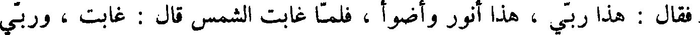
فقال هذا ربي، هذا أنور وأضوأ، فلما غابت الشمس قال : غابت ، وربي
To Save: `Ctrl+s`, make sure to choose `Webpage, complete`!